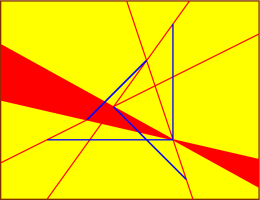
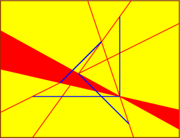
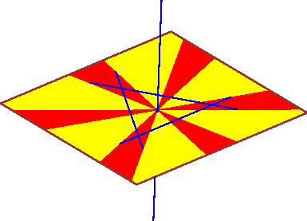
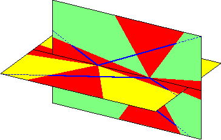

Connected components of line segment transversals
H. Brönnimann, H. Everett, S. Lazard, F. Sottile, and S. Whitesides
Consider the following problem:
Determine thet number of connected components of the set of
common transversals to 4 line segments.
Answer:
The question makes sense for any number n of line segments.
The bound is 2 except in 3 special degenerate cases.
- Assuming that n is at least 4, we show that the maximum number of
components is n, and this occurs only if the segments all lie along the
lines in one ruling of a hyperboloid of one sheet.
(All smaller numbers can occur, as well).
- For n>3, there can also be up to n connected components if all
segments are coplanar.
(This is n-1 if there are n-1 coplanar segments and one
non-coplanar segment.)
- Finally, in addition to these cases, when n=4, there can be three
connected components if the segments intersect pairwise.
Pictures of all these extreme geometries are presented below.
In these pictures, the lines segments are blue and the common
transversals are in red.
As there are infinitely many
common transversals, they form red regions on the
axillary surfaces that we also draw.
 


